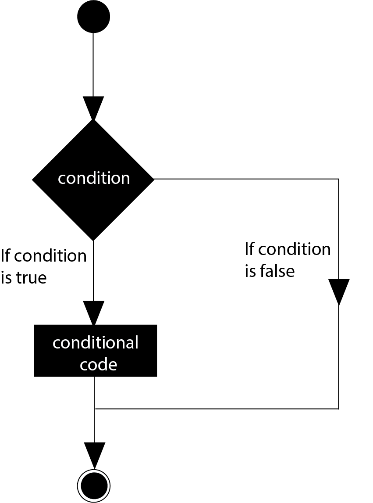

Decision Making
Decision making structures require that the programmer specifies one or more conditions to be evaluated or tested by the program, along with a statement or statements to be executed if the condition is determined to be true, and optionally, other statements to be executed if the condition is determined to be false.
Show below is the general form of a typical decision making structure found in most of the programming languages −
C programming language assumes any non-zero and non-null values as true, and if it is either zero or null, then it is assumed as false value.
C programming language provides the following types of decision-making statements.
| Sr.No. | Statement & Description |
|---|---|
| 1. | if statement
An if statement consists of a boolean expression followed by one or more statements. |
| 2. | if...else statement
An if statement can be followed by an optional else statement, which executes when the Boolean expression is false. |
| 3. | Nested if statements
You can use one if or else if statement inside another if or else if statement(s). |
| 4. | Switch statement
A switch statement allows a variable to be tested for equality against a list of values. |
| 5. | Nested switch statements
You can use one switch statement inside another switch statement(s). |
The ? : Operator
We have covered the conditional operator? : in the previous chapter which can be used to replace if...else statements. It has the following general form −
Exp1? Exp2: Exp3;
Where Exp1, Exp2, and Exp3 are expressions. Notice the use and placement of the colon.
The value of a? the expression is determined like this −
- Exp1 is evaluated. If it is true, then Exp2 is evaluated and becomes the value of the entire? expression.
- If Exp1 is false, then Exp3 is evaluated and its value becomes the value of the expression.
LOOP
A loop statement allows us to execute a statement or group of statements multiple times. Given below is the general form of a loop statement in most of the programming languages −

C programming language provides the following types of loops to handle looping requirements.
| Sr.No. | Loop Type & Description |
|---|---|
| 1. | while loop
Repeats a statement or group of statements while a given condition is true. It tests the condition before executing the loop body. |
| 2. | for loop
Executes a sequence of statements multiple times and abbreviates the code that manages the loop variable. |
| 3. | do...while loop
It is more like a while statement, except that it tests the condition at the end of the loop body. |
| 4. | Nested loops
You can use one or more loops inside any other while, for, or do..while loop. |
Loop Control Statements
Loop control statements change execution from its normal sequence. When execution leaves a scope, all automatic objects that were created in that scope are destroyed.
C supports the following control statements -
| Sr.No. | Control Statement & Description |
|---|---|
| 1. | break statement
Terminates the loop or switch statement and transfers execution to the statement immediately following the loop or switch. |
| 2. | continue statement
Causes the loop to skip the remainder of its body and immediately retest its condition prior to reiterating. |
| 3. | statement
Transfers control to the labeled statement. |
The Infinite Loop
A loop becomes an infinite loop if a condition never becomes false. The for loop is traditionally used for this purpose. Since none of the three expressions that form the 'for' loop are required, you can make an endless loop by leaving the conditional expression empty.
NOTE − You can terminate an infinite loop by pressing Ctrl + C keys.
FUNCTION
A function is a group of statements that together perform a task. Every C program has at least one function, which is main(), and all the most trivial programs can define additional functions.
You can divide up your code into separate functions. How you divide up your code among different functions is up to you, but logically the division is such that each function performs a specific task.
A function declaration tells the compiler about a function's name, return type, and parameters. A function definition provides the actual body of the function.
The C standard library provides numerous built-in functions that your program can call. For example, strcat() to concatenate two strings, memcpy() to copy one memory location to another location, and many more functions.
A function can also be referred as a method or a sub-routine or a procedure, etc.
Defining a Function
The general form of a function definition in C programming language is as follows −
A function definition in C programming consists of a function header and a function body. Here are all the parts of a function −
-
Return Type − A function may return a value. The return_type is the data type of the value the function returns. Some functions perform the desired operations without returning a value. In this case, the return_type is the keyword void.
-
Function Name − This is the actual name of the function. The function name and the parameter list together constitute the function signature.
-
Parameters − A parameter is like a placeholder. When a function is invoked, you pass a value to the parameter. This value is referred to as actual parameter or argument. The parameter list refers to the type, order, and number of the parameters of a function. Parameters are optional; that is, a function may contain no parameters.
-
Function Body − The function body contains a collection of statements that define what the function does.
Function Arguments
If a function is to use arguments, it must declare variables that accept the values of the arguments. These variables are called the formal parameters of the function.
Formal parameters behave like other local variables inside the function and are created upon entry into the function and destroyed upon exit.
While calling a function, there are two ways in which arguments can be passed to a function −
| Sr.No. | Call Type & Description |
|---|---|
| 1. | Call by value
This method copies the actual value of an argument into the formal parameter of the function. In this case, changes made to the parameter inside the function have no effect on the argument. |
| 2. | Call by reference
This method copies the address of an argument into the formal parameter. Inside the function, the address is used to access the actual argument used in the call. This means that changes made to the parameter affect the argument. |
Scope value
A scope in any programming is a region of the program where a defined variable can have its existence and beyond that variable, it cannot be accessed. There are three places where variables can be declared in C programming language −
-
Inside a function or a block which is called local variables.
-
Outside of all functions which are called global variables.
-
In the definition of function parameters which are called formal parameters.
Let us understand what are local and global variables, and formal parameters.
Local Variables
Variables that are declared inside a function or block are called local variables. They can be used only by statements that are inside that function or block of code. Local variables are not known to functions outside their own. The following example shows how local variables are used. Here all the variables a, b, and c are local to main() function.
Initializing Local and Global Variables
When a local variable is defined, it is not initialized by the system, you must initialize it yourself. Global variables are initialized automatically by the system when you define them as follows −
| Data Type | Initial Default Value |
|---|---|
| int | 0 |
| char | '\0' |
| float | 0 |
| double | 0 |
| pointer | NULL |
It is a good programming practice to initialize variables properly, otherwise your program may produce unexpected results, because uninitialized variables will take some garbage value already available at their memory location.